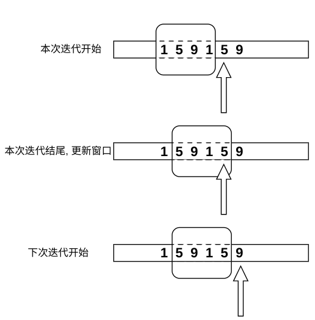

算法
Table of Contents
- 理解算法
- 记忆算法流程/思想
- 模板题: 快速默写(调试通过)
- 提高熟练度: 重写一道模板题 3-5 次
(要进行"模式识别" : 题目有哪些 特征 引导我们使用X方法?)
1. 基础算法
1.1. 排序
1.1.1. 快排 -> 基于分治思想
- 确定分界点
- 左边界 q[l]
- 中间 q[(l+r)/2]
- 右边界 q[r]
- 随机选取
- [难点] 调整区间: 让<= x 的在左边, >=x在右边. (==x的无所谓在左/右)
- 递归处理左右两个区间
#include <iostream> int n ; const int N = 1e6 + 10; // +10 防止出现边界问题 int q[N]; void quick_sort(int q[], int left,int right) { int x = q[left]; int i = left-1; int j = right+1; while(i<j){ do{++i;}while(q[i]>x); do{--j;}while(q[j]<x); if(i<j){swap(q[i],q[j]);} } quick_sort(q,left,j); quick_sort(q,j+1,right); }
void quicksort ( int b , int e ,vector<int>& a ) { if(a.size()<= 1 ) return; int i=b , j=e , x=a [ ( b+e ) / 2 ] ; while(i<j){ while ( a [ i ]<x ) i++; while ( a [ j ]>x )j--; if ( i<=j ) std::swap ( a [ i++],a [j--]); } if ( i<e ) quicksort (i , e , a ) ; if ( j>b ) quicksort (b , j , a ) ; }
fn qsort(a: &mut [i32]) { if a.len()<=1 {return;} debug_assert!(a.len()>=2); let mid = (0 + a.len()-1)/2; let pivot = a[mid]; let mut i = 0; let mut j= a.len()-1; while i < j { while a[i] < pivot { // < ! i+= 1; } while a[j] > pivot { // > ! j-= 1; } if i <= j { // 必须是 <= !!! eg: arr= [1,2], 否则当i = j = 0 时,陷入死循环. a.swap(i,j); if i< a.len()-1 { i +=1;} // 防止 i,j 的索引越界. if j >0 { j -=1;} } } debug_assert!(j<=i); // b<= j <= i <= e qsort(&mut a[0..=j]); qsort(&mut a[i..]); }
1.1.2. 归并
- 确定分界点
- 先对左右两侧分别进行递归(排序)
3.[难点] 归并左右两个已经排序的区间
双指针算法 : 分别指向左右两个区间的开头, 然后比较指针, 输出较小的,并后移.直到一个指针到末尾.
fn merge_sort(a: &mut [i32]){ if a.len() <= 1 { return ; } assert!(a.len() != 0); let len = a.len(); let mid = len/2; debug_assert!(mid>=1); let left = mid -1; // >=0 merge_sort(&mut a[0..=left]); merge_sort(&mut a[mid..len]); // 归并 let mut tmp = vec![0;len]; let mut i = 0; let mut j = mid; let mut k = 0; while i < mid && j < len { if a[i] <= a[j] { tmp[k] = a[i]; i+=1; k+=1; }else { tmp[k] = a[j]; j+=1;k+=1; } } while i < mid { tmp[k] = a[i] ; i+=1;k+=1;} while j < len { tmp[k] = a[j] ; j+=1;k+=1;} for i in 0..len { a[i] = tmp[i]; } }
1.2. 二分
1.2.1. 整数二分
整数除法会导致边界问题, 原则是: 调整为右边区间时要将mid点右移(+1).
[l,r] 中选一个中点mid, 来将区间划分为左右两部分, 选择答案所在区间, 然后将下一次要查找的区间更新为"左半边"/"右半边".
- 将区间更新为左半边需要调整的是原有的变量\(r = mid\). 此时 \(mid = \frac{l+r}{2}\) .
- 将区间更新为右半边需要调整的是原有的变量\(l = mid\). 此时 \(mid = \frac{1+l+r}{2}\) .
也就是要让选择的中间点稍微再往右移动一点, 否则将会导致
[0,-1]出现(下标越界), 或者反复对[0,1]进行操作(死循环/无限递归)
int bsearch1(int l, int r){ while( l<r ){ int mid = l + r >> 1; // (l+r)/2 if(check(mid)) r = mid; else l = mid+1; } return l; // l == r }
int bsearch2(int l, int r){ while(l<r) { int mid = 1+l+r >> 1; // (1+l+r)/2 if(check(mid)) l = mid; else r = mid -1; } return l; // l == r }
1.2.2. 浮点数二分
没有边界问题.
double sqrt(double n ) { double l = 0; double r = n; if(n<1) // eg: n=0.01, res=0.1 r = 1; double mid = (l+r) / 2.0; while(r - l > 1e-8){ mid = (l+r)/2.0; if( mid*mid > n ) r = mid; else l = mid ; } return l; }
int main(){ double x{}; std::scanf("%lf",&x); double res = sqrt(x); std::printf("%lf",res); return 0; }
1.3. 大整数(高精度)
1.3.1. 实现
#[derive(Debug, Clone, Copy, PartialEq, Eq)] enum BigIntSign { Plus, Minus, } impl BigIntSign { pub fn reverse(self) -> Self { match self { Self::Plus => Self::Minus, Self::Minus => Self::Plus, } } } impl Display for BigIntSign { fn fmt(&self, f: &mut std::fmt::Formatter<'_>) -> std::fmt::Result { match self { Self::Plus => write!(f, "+"), Self::Minus => write!(f, "-"), } } } #[derive(Debug)] struct BigInt { inner: Vec<u8>, // 低位在Vec开头! sign: BigIntSign, } impl Display for BigInt { fn fmt(&self, f: &mut std::fmt::Formatter<'_>) -> std::fmt::Result { let str: String = self.to_string(); write!(f, "{}", str) } } impl BigInt { pub fn new(s: &str) -> Self { let mut inner = vec![]; let mut sign = BigIntSign::Plus; for (i, c) in s.char_indices().rev() { if c == '-' && i == 0 { sign = BigIntSign::Minus; } else if c != '+' && c != '-' { let n: u8 = c.to_string().parse().unwrap(); inner.push(n); } } let mut res = Self { inner, sign }; res.remove_zero(); res } pub fn len(&self) -> usize { self.inner.len() } pub fn to_string(&self) -> String { let mut res =if self.sign == BigIntSign::Minus { "-".to_string() } else { "".to_string() }; for n in self.inner.iter().rev(){ res.push_str(&n.to_string()); } res } /// 移除前导零 fn remove_zero(&mut self) { while self.inner.len() > 1 && *self.inner.last().unwrap() == 0 { self.inner.pop(); } } pub fn add(&self, other: &Self) -> Self { if self.sign != other.sign { return self.sub(&other.neg()); } debug_assert_eq!(self.sign, other.sign); let mut res = vec![]; let max_len = if self.len() > other.len() { self.len() } else { other.len() }; let mut overflow = false; for i in 0..max_len { let a = self.inner.get(i).copied().unwrap_or(0); let b = other.inner.get(i).copied().unwrap_or(0); let c = a + b + if overflow { 1 } else { 0 }; overflow = c >= 10; let c = c % 10; res.push(c); } if overflow { // 最高位是否进1 res.push(1); } let mut res = Self { inner: res, sign: self.sign, }; res.remove_zero(); res } pub fn abs(&self) -> Self { Self { inner: self.inner.clone(), sign: BigIntSign::Plus, } } pub fn neg(&self) -> Self { Self { inner: self.inner.clone(), sign: self.sign.reverse(), } } pub fn sub(&self, other: &Self) -> Self { if self.sign != other.sign { return self.add(&other.neg()); } debug_assert_eq!(self.sign, other.sign); let s = self.abs(); let other = other.abs(); if s < other { let mut res = other.sub(&s); if self.sign == BigIntSign::Plus { res.sign = BigIntSign::Minus; } return res; } let mut res = vec![]; let max_len = if self.len() > other.len() { self.len() } else { other.len() }; let mut carry = false; for i in 0..max_len { let a = self.inner.get(i).copied().unwrap_or(0) - if carry { 1 } else { 0 }; let b = other.inner.get(i).copied().unwrap_or(0); carry = a < b; let c = if a < b { 10 + a - b } else { a - b }; res.push(c); } let sign = if res.len() == 1 && res[0] == 0 { BigIntSign::Plus } else if self.sign == BigIntSign::Minus { BigIntSign::Minus } else { BigIntSign::Plus }; let mut res = Self { inner: res, sign }; res.remove_zero(); res } pub fn mul(&self, other: i128) -> Self { if other == 0 { return Self::default(); } let sign = if other > 0 { self.sign } else { self.sign.reverse() }; let other = other.abs(); let mut res = vec![]; let mut overflow: u8 = 0; for i in 0..self.len() { let a = overflow as i128 + (self.inner[i] as i128) * other; res.push((a % 10) as u8); overflow = (a / 10) as u8; } if overflow != 0 { res.push(overflow); } let mut res = Self { inner: res, sign }; res.remove_zero(); res } pub fn div(&self, other: i128) -> Option<Self> { if other == 0 { return None; } let sign = if other > 0 { self.sign } else { self.sign.reverse() }; let mut inner = vec![]; let other = other.abs(); let mut r: i128 = 0; for i in (0..self.inner.len()).rev() { let divide = r * 10 + self.inner[i] as i128; inner.push((divide / other) as u8); r = divide % other; } inner.reverse(); let mut res = Self { inner, sign }; res.remove_zero(); Some(res) } } impl Default for BigInt { fn default() -> Self { Self { inner: vec![0; 1], sign: BigIntSign::Plus, } } } impl PartialEq for BigInt { fn eq(&self, other: &Self) -> bool { return self.sign == other.sign && self.inner == other.inner; } } impl Eq for BigInt {} impl PartialOrd for BigInt { fn partial_cmp(&self, other: &Self) -> Option<std::cmp::Ordering> { use std::cmp::Ordering::*; use BigIntSign::*; if self.sign == Plus && other.sign == Minus { return Some(std::cmp::Ordering::Greater); } else if other.sign == Plus && self.sign == Minus { return Some(std::cmp::Ordering::Less); } else { debug_assert_eq!(self.sign, other.sign); let mut cmp_abs = Equal; if self.inner.len() > other.inner.len() { cmp_abs = Greater; } else if self.inner.len() < other.inner.len() { cmp_abs = Less; } else { debug_assert_eq!(self.inner.len(), other.inner.len()); let mut end = self.inner.len() - 1; for i in (0..=end).rev() { if self.inner[i] > other.inner[i] { cmp_abs = Greater; break; } else if self.inner[i] < other.inner[i] { cmp_abs = Less; break; } } } if self.sign == Minus { cmp_abs.reverse(); } return Some(cmp_abs); } } } impl Ord for BigInt { fn cmp(&self, other: &Self) -> std::cmp::Ordering { self.partial_cmp(other).expect("cannot cmp!") } }
1.3.2. 大整数相加减
1.3.3. 大整数 乘/除以 小整数
这里的小整数数指的是基础类型中的整数, int, uint …
- 乘法
乘法是用小整数分别和大整数的每一位相乘:
vector<int> mul(vector<int>& A, int b) { vector<int> res; int overflow = 0; // 结果res的位数有可能超过A, 因此要考虑是否加上了最高位向前的进位 for(int i= 0; i<A.size()||overflow != 0; i++) { int t = overflow; // 前一位的进位 if(i<A.size()) t += A[i] * b; overflow = t/10; // 更新进位 res.push_back(t % 10); //当前位的计算结果的个位 } while(res.size()>1 && res.back()==0 ) res.pop_back(); //去除前导零. return res; }
- 除法
// r表示返回的余数. vector<int> div(vector<int>& A, int b, int &remainder) { vector<int> res; int r = 0; // 高位除法的余数 for(int i = A.size()-1; i>=0; i--){ int a = r*10 + A[i]; // 高位的余数*10 加上 低一位 == 新的被除数 int c = a / b; // 结果res的某一位 res.push_back(c);// 稍后需要反转res. r = (a % b); //将当前一位的除法余数记录下来. } remainder = r;// 将个位除法的余数记录下来. std::reverse(res.begin(),res.end());// 反转res //去掉前导零: while(res.size()>1 && res.back()==0 ) res.pop_back(); return res; }
1.4. 前缀和 & 差分
互为逆运算
前缀和: \(S_k = S_{k-1}+a_k\)
\[S_i = a_0 + a_1 + a_2 + a_3 + \dots + a_i\]
\[S_{-1} = 0\]
1.4.1. 计算前缀和
let mut s = vec![]; s.push(a[0]); //s[0] for i in 1..a.len() { s[i] = s[i-1] + a[i]; }
1.4.2. 前缀和的应用: 求区间和
[l!=0, r] 的和: \(S_r - S_{l-1}\)
[0, r] 的和: \(S_r - 0\)
\[S_r = a_0+ a_1+a_2+\dots+a_{l-1}+ a_{l}+\dots+a_r\]
\[S_{l-1} = a_0 + a_1+a_2+ \dots +a_{l-1}\]
1.4.3. 二维前缀和
\(S_{ij}\) 表示以 \(a_{00}\) 为矩形左上角,\(S_{ij}\) 为矩形右下角的区域中的 \(a_{ij}\) 元素之和
如何求出中间的一个矩形中的元素之和?
\[ S = S_{x_2 y_2} - S_{x_2, y_1-1} - S_{x_1-1, y_2} + S_{x_1-1,y_1-1} \]
S[i][j] 的任意一个下标 <0 时, 令 S[i][j] = 0.
1.4.4. 二维前缀和的计算
\[ S_{i,j} = S_{i-1,j} + S_{i,j-1} - S_{i-1,j-1} + a_{i,j} \]
1.5. 双指针
1.6. 位运算
1.7. 离散化
1.8. 区间合并
2. 基本数据结构
3. 搜索&图论
3.1. DFS
3.1.1. 回溯
- 22. 括号生成
实现dfs递归函数所需的基本要素:
- 当前状态: prefix(当前所构造的括号序列) left 左括号个数, right: 右括号个数
- 最大深度: n 括号对数
- 是否停止递归: 当前状态所对应的深度 ?= 最大深度
- 合法地更新状态,并继续递归:
- 在这里合法的意思是要让括号序列不能违背匹配所需的必要条件:
- 当左括号 >= 右括号 时才能继续加右括号;
- 当左括号<n时,可以继续加左括号
- 在这里合法的意思是要让括号序列不能违背匹配所需的必要条件:
impl Solution { pub fn generate_parenthesis(n: i32) -> Vec<String> { let mut res = Vec::new(); let mut s = String::new(); Self::dfs(&mut res,&mut s, 0,0,n); res } fn dfs(res: &mut Vec<String>,prefix: &mut String,left:i32,right:i32,n:i32){ if prefix.len() == 2*(n as usize) { // 能到达的最深位置 res.push(prefix.clone()); } else { if right < left && right < n { prefix.push(')'); Self::dfs(res,prefix,left , right +1 ,n); prefix.pop(); } if left < n { prefix.push('('); Self::dfs(res,prefix,left+1 , right ,n); prefix.pop(); } } } }
4. 数学
5. 动态规划
能否直接用递归的思路求解?
决定答案的变量有哪些?
5.1. 01背包
被本质上就是 \(C^{k}_n\) 的推导.
\(i\) 个物品, 不放回选择物品, 总体积限制是 \(j\) .每个物品的价值是\(w_i\),期望选择物品的总价值最大.
\(dp[i][j]\) : 在前 \(i\) 个物品中选择且总体积不超过 \(j\) 时的最大价值
以是否选择第 \(i\) 个物品作为划分集合的条件: \[dp[i][j] = max( dp[i-1][j], dp[i-1][j-v_i]+w_i )\]
- \(dp[i-1][j]\) 代表 不选择第 \(i\) 个物品, 只在前 \(i-1\) 个物品中选择
- \(dp[i-1][j-v_i]+w_i \ (j>=v_i)\) 代表一定选择第 \(i\) 个物品, 因此可用的体积还剩下j-vi, 且总价值至少有wi, 在前i-1个物品中继续选择.
5.2. 完全背包
被本质上就是 \(A^{k}_n\) 的推导.
\(i\) 个物品, 选择后放回(相当于每个物品的数量无限), 总体积限制是 \(j\) . 每个物品的价值是 \(w_i\), 期望选择物品的总价值最大.
\(dp[i][j]\): 在前 \(i\) 个物品中选择且总体积不超过 \(j\) 时的最大价值
以是否选择第i个物品作为划分集合的条件:
\[dp[i][j] = max( dp[i-1][j], dp[i][j-v_i]+w_i )\]
- \(dp[i-1][j]\) 代表 不选择第i个物品, 只在前i-1个物品中选择
- \(dp[i-1][j-v_i]+w_i \ (j>=v_i)\) 代表至少选择一个第i个物品, 因此可用的体积还剩下j-vi, 且总价值至少有wi, 不过因为物品有无限个, 因此仍可在前i个物品中继续选择(而不是前i-1个物品)
// n 个 物品 // 背包体积为 v let mut dp = vec![vec![0;n];v]; for i in 1..n { for j in 1..v { dp[i][j] = dp[i-1][j]; if j > v[i] { dp[i][j] = max(dp[i][j], dp[i][j-v[i]] + w[i] ) } } }
// n 个 物品 // 背包体积为 v let mut dp = vec![vec![0;n];v]; for i in 1..n { for j in 1..v { dp[i][j] = dp[i-1][j]; if j > v[i] { dp[i][j] = max(dp[i][j], dp[i][j-v[i]] + w[i] ) } } }
dp在维度i上只和i-1有关 , 因此可以去掉这个维度. 而 dp[i][j] = dp[i][j-v[i]] 时, dp[i][j] 的赋值不会导致 dp[i][< j] 的值被覆盖掉, 因此不用倒着遍历j这个维度. (dp[i][j] = dp[i-1][j-v[i]], 在只有一维dp时,对dp[i][j]的赋值实际上会将dp[i-1][j]的值覆盖掉,之后的计算还会用到它, 因此要从大到小遍历 j.)
// n 个 物品 // 背包体积为 v let mut dp = vec![0; v]; for i in 1..n { for j in 1..v { dp[j] = dp[j]; if j > v[i] { dp[j] = max(dp[j], dp[j-v[i]] + w[i] ) } } }
// n 个 物品 // 背包体积为 v let mut dp = vec![0; v]; for i in 1..n { for j in v[i]..v { dp[j] = max(dp[j], dp[j-v[i]] + w[i] ); } }
6. 贪心算法
7. 如何 "对付" 二重循环
排序+双指针: 二重循环压缩成一重循环.
剪枝: 在循环中, 提前退出不满足的要求的迭代.
8. 滑动窗口
这种查看数组中一个元素和相邻的其他元素的某种关系的问题,可以使用滑动窗口.

我们假设窗口总在当前元素的左边, 并且不包含当前元素. 查看完窗口后,需要为下一个元素更新窗口:
- 先移除窗口中最左侧的元素
- 再将窗口右侧的元素加入到窗口中.
"先删后加"的顺序可以保证即便 窗口是用 Set 实现时, 更新窗口的逻辑始终是正确的, 不会因为删除的元素和待添加的元素相等, 而导致删除了应当添加的函数.
9. 找数组中的多数者
严格大于 "半数"/ "三分之一数" …
寻找数组中 出现次数 > length/N 的 N-1 个元素.(最多只能有N-1个)
时间 O(n) , 空间 O(1).
(这种算法的使用前提是可以确保数组中一定存在多数元素, 否则会产生错误结果: [1,2,1,3] )
将相同的元素看作同阵营的士兵. 假设有 N-1 个待突袭的房间.
对每个士兵:
- 若存在同阵营占领的房间, 则该士兵 优先 进入此房间, 人数+1. (优先选择此分支)
- 若存在空房间,则该士兵占领此房间.(人数+1)
- 若房间都被其他阵营的人占据, 则该士兵可以 分别 杀死每个房间中的1个人 (人数-1), 然后自己立即死去(即: 无法再占领出现的空房间).
最后 N-1 个房间剩下的元素(士兵) 可能是多数元素. 需要再用一次循环统计元素个数, 来判断是否真的是多数元素.
10. 产生满足某种性质的新链表
主要想法:
准备一个节点dummy,作为输出链表的伪头部, 不断地从输入链表头部摘取节点, 按照某种条件/性质将其插入到dummy链表的正确位置(ptr后面), 直到没有节点可以摘取.
这种写法不一定在时空复杂度上较优, 但是比较清楚, 代码量较少且思路可复用.
/// 伪代码模板: let mut dummy = ListNode::new(i32::MIN); // 任意值 while let Some(mut node1 ) = head { // 将第一个节点从链表上摘下来: head = node.next.take(); // 通过调整ptr来找到(输出链表)正确的插入位置 let mut ptr: &mut ListNode = &mut dummy; /// ... /// 根据题意调整ptr, 保证dummy所指的链表始终满足题目要求的性质. /// ... /// 将摘下来的node插入到ptr之后: node.next = ptr.next.take(); ptr.next = Some(node); } return dummy.next